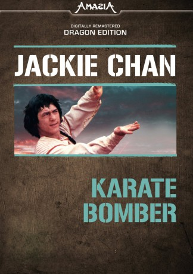
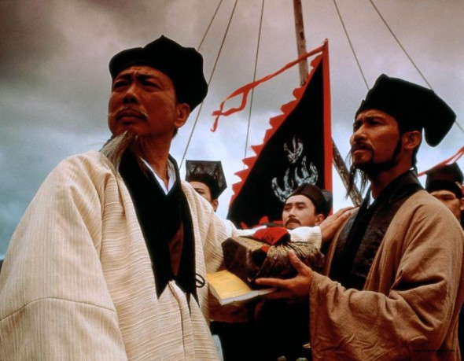
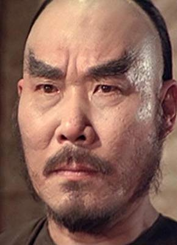
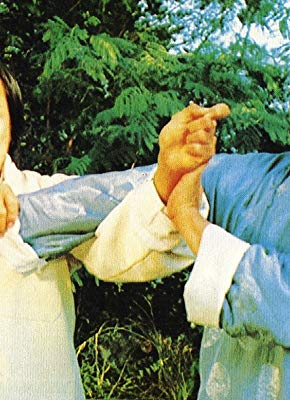

#7035 Karate Bomber
 
 IMDB-Wertung: 5.9 / 10
IMDB-Wertung: 5.9 / 10  Metascore: 0
Metascore: 0 
Der Waise Jiang hat es schwer, Arbeit zu bekommen, immer ist dem kampfunerfahrenen Jungen Spott gewiß. Als er Zeuge des Duells der "Tödlichen Peitsche" und des Verbrechers Sze wird, bei dem beide Männer ums Leben kommen, versucht Jiang sein Leben zu ändern und nimmt die Rolle der "Peitsche" an. Durch Zufall bekommt er in einem alten Bettler den lange gesuchten Lehrer, der ihn in der Technik des Kampfes unterweist. Schließlich spielt Jiang sogar die entscheidende Rolle im Kampf eines aufrechten Fürsten gegen die verbrecherische Erhabene und ihre Schurken.
Jahr: 1978
Dauer: 97 Minuten
FSK: 12
Land: Taiwan Studio: Splendid FilmTonspuren:
Untertitel: Deutsch,
Auflösung: 1080p (1920x808) Größe: 8130 MB
Genre: Action, Komödie
Regisseur: Chi-Hwa Chen
Drehbuch: Ming Chi Tang
Soundtrack:
Darsteller:
 Jackie Chan als Jiang
Jackie Chan als Jiang- Ju-Lung Ma als
 Dean Shek als Man with Cane
Dean Shek als Man with Cane-  Wu Ma als Pissing Man
- Chung-Erh Lung als Fong
- Jeong-Nam Kim als Chin Ping Lu
- Chih-Ping Chiang als
- Kang Chin als Thousand-Faces
- Kang Ho als
- Ti Hsieh als
- Hang Hsu als
- Yuan Hsu als
- Han Chang Hu als
- Sae Ok Kim als Man Wearing Leopard Skin
- Chi-Lun Li als
- Hai Lung Li als
- Min-Lang Li als Xu Tai Chung, Man Fighting with Whip Hero
-  Wen Tai Li als Beggar
- Chao-Hsiung Lin als
- Kuang Yung Lin als
- Shun-keng Lu als
- Tien Miao als Mr. Wan
- Szu-Cheng Mu als Man Waering Gold Cap
- Kang Peng als
-  James Tien als Mao
- Yao Wang als
- Te-Shan Wu als
- Lieh Yang als
Datei: X:\HD-Eastern-Collections\Jackie Chan\Karate Bomber (1978, FSK12, 1920x808).mkv seit 18.09.2017
Festplatte: HD Eastern+Western
 Es gibt insgesamt 58 Filme in der Gruppe 'HD-Eastern-Collections\Jackie Chan'
Es gibt insgesamt 58 Filme in der Gruppe 'HD-Eastern-Collections\Jackie Chan'